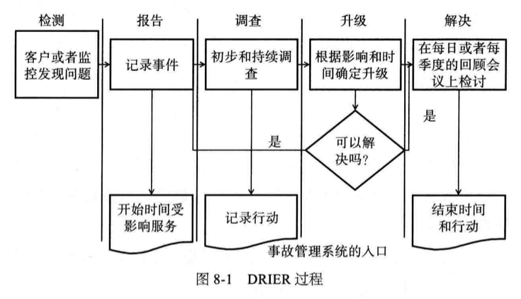

如果没有关键性的性能指标来帮助我们度量达成期望的成果，那么我们就不应该去管理这个机构。管理意味着度量，度量失败即管理失败。如果组织很难度量每个人的表现，那么你就无法度量产出。如果你无法度量组织的产出和工作的质量，你就无法应对突然发生和快速发展带来的问题
情感型冲突是以角色或控制为基础的冲突，经常发生在团队之间。认知型冲突常常是关于“谁”做，或者“怎么”做。认知型冲突，如果处理得当，常被称为“好的冲突”
管理是与“推”（pushing）相关的活动，而领导是与“拉”（pulling）相关的活动。领导设定目的地和通往目的地的路线图。管理设法到达目的地。如果一个人聚集在事务还是处方面，那么就是一个经理，如果一个人更具有远见卓识，那他就是一个领导
管理聚集在度量和提高，目的是为股东创造价值。管理要求尽早和经常地进行沟通，清楚地定位哪些进展良好，哪些需要给予帮助。在通往目的地的路上经常有障碍，管理活动也包括移除障碍或者帮助团队绕过障碍。管理对扩展性很重要，因为这关系到如何从组织中得到最大的产出，因此要降低单位产出的成本。定义应该怎么表现是管理的责任，实际表现得如何对组织、流程和系统的影响极大
管理与人相关，需要确保合适的人，在合适的时间，以合适的行为，做合适的工作
领导是描绘激动人心的愿景，并把愿景深入到员工的心里，引领他们为公司做正确的事情。确定使命、描绘愿景、制订路线图，帮助员工理解做什么和如何做才能为股东创造价值。定义阶段性的目标和KPI.
失败的影响：
- 无人负责
- 多个组织或人被赋予了同样的目标
多个组织或人被赋予了同样的目标和“共享同一个目标”并不是同一件事。共享目标是好的，因为“共享”内含合作之意
组织的设计并没有对错之分，任何的组织结构决策都有利有弊。重要的是在组织的设计中要包括全部的责任，不仅要清楚地定义谁是决策者，还要搞清楚谁负责为决策提供信息，决策和行动方案都应该通知谁，谁来负责执行决策
没有做过CTO或者CIO，没有技术学历或工程师经历的CEO的建议：
- 提出问题并从答案中寻找一致性
- 寻找外部的帮助
- 加强对可扩展性的理解
架构师的责任是确保系统的设计和架构可以随着业务的发展而扩展。这里我们清楚地指出设计和实施之间是有差别的。架构师需要在业务发生之前就想好，远在业务部门的预测超过平台的容量之前，就已经对如何扩展系统深思熟虑了
RASCI：
- R负责，对项目或者任务的完成负责的人
- A批准，项目关键决策的批准人
- S支持，为项目完成提供资源的人
- C咨询，为项目提供数据或者信息的
- I知情，需要了解项目相关情况的人
当组织有利于工作的时候，效率就会得到提高；反之，当出现不必要的结构层次且需要大量交流才能完成工作的时候，效率就会降低
一个不注重代码、文档规范和配置标准的制订、发布和应用的组织，研发效率和质量必然低下，生产中出现严重辨别是非的风险很大
影响团队规模的因素：管理经验、团队在职时间、经理的责任、业务的需要，前三个是限制团队规模的约束条件，限制团队规模的目的是减少经理的负担，使团队创造价值的时间最大化。业务的需要目的是加大团队规模。沟通不畅、生产率低下、士气低落是团队规模太大的信号
专注、希望和同情是改变个人的三个要素。专注是自知，包括感情和能力，希望和同情有助于产生愿景，从而驱动改变
作为经理或领导，其正确的工作方法是发现如何挖掘出团队的潜力，使股东获得最大的利益。只有你作为团队的领导而非个人来发挥作用的时候，才能成为长期财富产生过程中的一个关键部分
能干的领导和经理完成使命，伟大的领导和经理则是通过营造文化氛围，使员工感受到赏识和尊重，诚实而且及时地处理绩效相关的反馈
一个愿景应该符合的标准：
- 对理想未来的生动描述
- 为股东创造价值很重要
- 可度量
- 激动人心
- 结合信仰的因素
- 大致不变，但可根据需要修改
- 容易记忆
对使命的描述应该符合：
- 对当前状态和行动的描述
- 有目的感
- 可度量
- 一个大方向或一条通往愿景的道路
AKF对管理的定义：管理是以执法和道德手段来完成某件事
5-95规则：即用5%的时间制订一个充足、保守和详细的计划，同时承认这个计划不是完备的，把其余95%的时间投入到应急演练，以应付突发事件
如果团队要持续提升或改善表现，那么就需要不断地进行下面三项活动：
- “播种”就是增加新的、更好的人才
- “施肥”就是培养和发展要保留的人
- “除草”就是淘汰掉表现不佳的人
产品组织模式团队的主要评估不是以成本为基础，而是把它视为盈利中心。这并不是说该种组织的成本无关紧要，而是要评估成本所带来的收入和利润
确保一个项目得不到任何资金支持的办法，是用收入和成本以外的东西来刘鹏项目的重要性。换句话说，没有人会在意你要做的那个项目是否将采用最新的和最好的技术。你的工作是解释清楚，如何以及为什么它能最大限度地增加收入和降低成本，从而使股东的价值最大化
业务过程：“为特定的客户产生特定的服务或与产品相关的结构化活动或任务的集合。”。根据软件工程研究所发布的能力成熟度模型，过程帮你解决可扩展性问题，并提供如何吸收知识把事情做得更好的方法。过程让团队可以迅速应对危机、查明故障的根源、确定系统的容量、分析扩展的需求、实施扩展的项目、解决可扩展系统和组织的许多基本问题
DRIER：
- D，通过监控或与客户联系检测事故
- R，报告事故，记入负责跟踪全部事故、失效或其他事件的系统
- I，调查事故以确定该做什么
- E，如果事故在规定的时间内没能解决，尽快升级
- R，通过恢复最终用户需要的功能和记录所有的信息，为解决事故做跟进


最有效的领导人在危机中保持冷静，在整个危机管理的过程中能有力地维持秩序。他们必须有敏锐的业务头脑和技术经验，可以随压力
生产环境的变更管理：
- 有效的变更识别过程的最低限度应包括变更时间、目标系统、预期结果以及联系方式
- 变更管理的目的是通过控制生产发布和记录活动，限制变更的影响
- 变更管理包括以下几个阶段：请求、审批、调度、执行与日志、验证、回顾
- 变更请求是过程的起始，应该包括：系统或子系统、预期结果、如何执行、已知风险、已知的依赖关系以及与其他变更或子系统的关系
- 在更先进的变更过程中，变更请求还包含有关风险、回报、建议的日期等信息
- 变更审批验证所有信息的正确性，只有提出变更请求的人才有权力做出变更
- 变更调度是通过分析依赖性，评估子系统的组件变更率以限制风险的过程，目的是减少事故的风险。成熟的过程包括风险和回报分析
- 变更验证确保变更满足预期效果。如果失败可以回滚，如果取得部分效果，可以升级
- 变更回顾是变更管理团队对变更过程和结果的内部评审。它分析数据，从而了解变更的速度、失败率、对响应市场时间的影响等
- 变更管理过程应由变更管理小组以外的团队来评审，以确定其有效性。每季度或年度审查是适当的，审查应该由CTO/CIO和公司高管进行
- 在实践持续交付的公司里，变更管理把规则通过代码集成在自动化测试系统中，以完成自动化发布。在持续交付解决方案中，风险分析、变更识别、变更审批和风险水平都是内在的
建议任何组件的最大容量不要超过50%，如果没有以事实为基础的好理由，那就不要偏离该经验法则
好的架构原则：
- 具体的：原则不应该被混淆在它的措辞中
- 可度量的：原则不应包含“无限”这样的词汇
- 可达到的：尽管原则应该是鼓舞人心的，它们应该能够在设计和执行上实现
- 现实的：团队应该有能力达成目标。有些原则是可以实现的，但是需要时间或天赋
- 可测试的：修改后的原则可以用于测试设计，以验证它是否符合需要

架构原则：
- N+1设计：确保任何你所开发的系统在发生故障时，至少有一个冗余的实例
- 回溯设计：无论你构建什么，都要确保它可以向后兼容
- 禁用设计：当设计系统时，特别是与其他系统或服务通信的高风险系统时，要确保这些系统能够通过开关来禁用
- 监控设计：不仅能发现服务的死活，检查日志文件，还能收集系统相关的数据，即使不能自我修复，至少可以自我诊断
- 设计多活数据中心：隔离灾难和危机，在地理上分散生产数据中心以提供数据
- 使用成熟的技术：新技术也往往有较高的故障率，把新技术用在对解决方案的可用性要求不高的新功能上，一旦就证明它可以可选地处理日常地交易，就可以把此技术移植到关键任务领域
- 异步设计：同步系统故障率更高，异步系统对速度减缓更加宽容
- 无状态系统：状态系统中的操作都是在前后关联的情况下进行的，状态耗费资金、处理能力、可用性和可扩展性
- 水平扩展非垂直升级：如果你想达到近乎无限的扩展，那么就必须分散系统、组织和流程以利于扩展
- 设计至少要有两个步骤的前瞻性：考虑未来，要搭建一个可以使用和修改的未来系统
- 非核心则购买：进化论你和你的团队是多么聪明，你不可能什么事都做得最好
- 使用商品化硬件：应该购买便宜的硬件来做练习
- 小构建，小发布，快试错：小版本的失败率低，小迭代也有助于我们了解是否需要以及如何调整产品和架构的方向
- 隔离故障：我们很少花时间去思考清楚系统是怎么失败的，细分你的产品、服务或子服务，确保服务或者子服务的故障不会影响其他的服务
- 自动化：每次都会以同样的方式，或取得相同的成功，或犯相同的错误，自动部署、构建、测试、监控甚至报警
要做出一个好的自建与外购决策，需要回答四个问题：
- 自建的组件是否能形成具有战略性差异化的竞争优势？
- 我们是该资产最好的所有者吗？
- 该组件的竞争情况如何？
- 自建的成本效益如何？

性能测试的步骤：
- 建立成功的标准。从应用、组件、设备或正在测试的系统中确定标准
- 建立适当的环境。确保测试环境尽可能接近生产，保证测试结果的准确性
- 定义测试。有许多不同类别 的测试应该考虑纳入性能测试，包括耐久性、负载、最常用的、最明显的和组件测试
- 执行测试，在步骤2建立的环境中执行
- 分析数据。可以采取多种形式
- 向工程师报告
- 重复测试和分析
压力测试步骤：
- 确定目标。确定你为什么要做压力测试，通常有四类，建立基线、确定故障和恢复过程中的行为、掌握资源损失中的投放费用了并确定服务失效对整个系统的影响
- 确定关键服务。时间和资源是有限的，所以只能选择最重要的服务去测试
- 确定负载。计算或估计需要的负载量，以施加到系统上直到突破点
- 建立适当的环境。环境应该尽可能地模仿生产，以确保测试的有效性
- 确定监视点
- 产生负载
- 执行测试
- 分析数据
无论你做什么，一定要确保把与盈利关系最密切的事情和可能失败及有需求限制的其他系统适当地隔离
最容易扩展的流量是那些达不到应用层的流量，因为可以通过缓存来提供服务。无论是数据库还是应用服务中的数据，如果访问频繁而且不经常更新，使用对象缓存是有意义的
会话扩展的三个解决方案：
- 避免：
- 完全删除会话数据
- 通过在代码中对用户取模数来关联用户和某个特定的服务器
- 通过会话cookie从负载均衡器上把用户与特定服务器关联起来
- 分散：
- 在浏览器的cookie中存储所有会话的cookie信息
- 存储会话cookie作为会话对象的索引，所有信息存储在数据库或文件系统中
- 集中：
- 在一个集中的会话缓存系统如Memecached中存储会话
- 也可以使用数据库，但不推荐
监控问题和总体框架：
- 大多数监控平台存在两个主要问题：
- 被监控的系统不有为监控做好设计
- 监控方法是自下而上而非自上而下，错过了关键问题”是否有影响客户的问题在发生“
- 解决这些问题
- 在开发之前设计好被监控的系统
- 监控指标首先要回答”出问题了吗“。这是典型的业务和客户体验指标
- 监控白云指标其次要回答”哪里出了问题“。这是典型的系统方面的指标
- 监控指标最后要回答”是什么问题“。这是集成在应用中与设计原则相吻合的指标